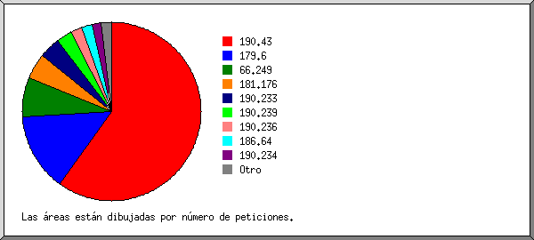
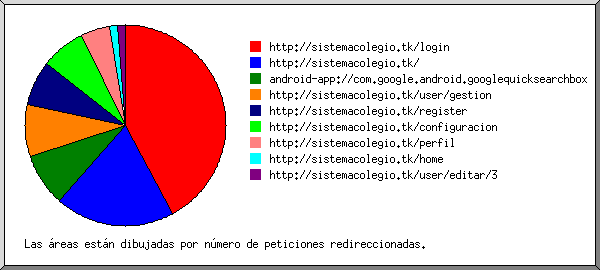
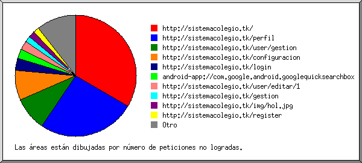
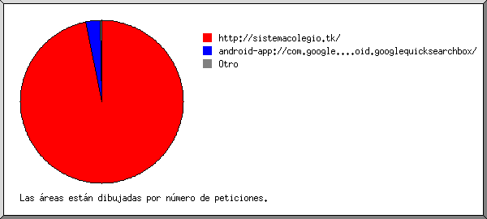
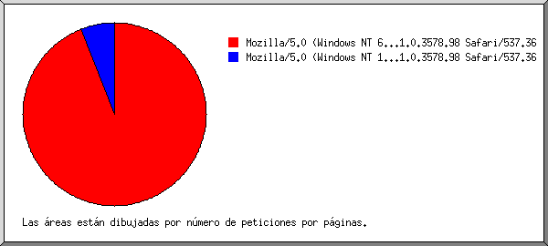
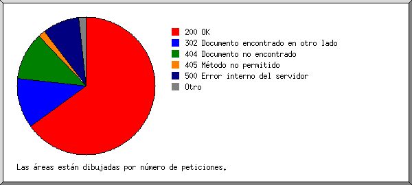
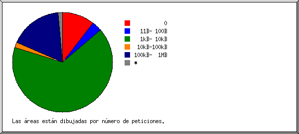
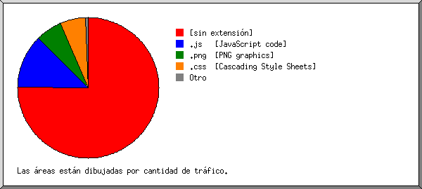
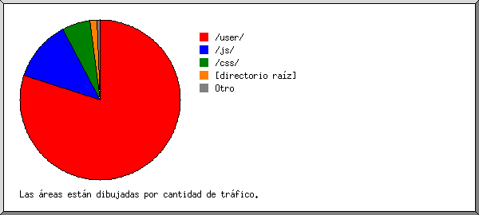
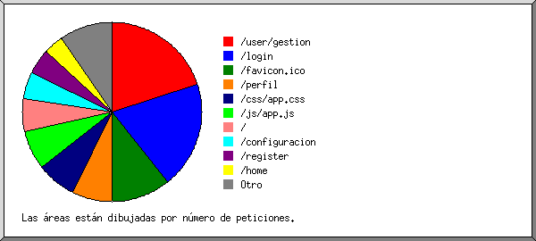

Estadísticas del servidor Web de sistemacolegio.tk
Estadísticas del servidor Web de sistemacolegio.tk
Programa iniciado a las Dom/03/Feb/2019 9:14 am.
Análisis de peticiones del Mié/30/Ene/2019 5:42 pm al Dom/03/Feb/2019 5:07 am (3.48 días).
Estadísticas del servidor Web de sistemacolegio.tkPrograma iniciado a las Dom/03/Feb/2019 9:14 am.
Análisis de peticiones del Mié/30/Ene/2019 5:42 pm al Dom/03/Feb/2019 5:07 am (3.48 días).
(Ir a: Arriba | Resumen general | Informe mensual | Resumen diario | Resumen horario | Informe de dominios | Informe de organización | Informe de remitentes redirecionados | Informe de errores de remitentes | Informe de sitios remitentes | Informe de navegadores | Resumen de navegadores | Informe de Sistemas Operativos | Informe de códigos de estado | Informe de tamaño de archivos | Informe de Tipos de Archivo | Informe de Directorios | Informe de peticiones)
Peticiones exitosas: 585
Promedio de peticiones exitosas por día: 168
Peticiones exitosas por página: 34
Promedio de peticiones exitosas por página por día: 9
Peticiones no logradas: 208
Peticiones redireccionadas: 109
Archivos diferentes solicitados: 35
Sistemas diferentes atendidos: 20
Transferencia total: 108.39 megabytes
Promedio de transferencia por día: 31.18 megabytes
(Ir a: Arriba | Resumen general | Informe mensual | Resumen diario | Resumen horario | Informe de dominios | Informe de organización | Informe de remitentes redirecionados | Informe de errores de remitentes | Informe de sitios remitentes | Informe de navegadores | Resumen de navegadores | Informe de Sistemas Operativos | Informe de códigos de estado | Informe de tamaño de archivos | Informe de Tipos de Archivo | Informe de Directorios | Informe de peticiones)
Cada unidad ( ) representa 1 petición de una página.
) representa 1 petición de una página.
| mes | No. pet. | Págs. | |
|---|---|---|---|
| Ene 2019 | 526 | 34 |   |
| Feb 2019 | 59 | 0 |
Mes de mayor tráfico: Ene 2019 (34 peticiones por páginas).
(Ir a: Arriba | Resumen general | Informe mensual | Resumen diario | Resumen horario | Informe de dominios | Informe de organización | Informe de remitentes redirecionados | Informe de errores de remitentes | Informe de sitios remitentes | Informe de navegadores | Resumen de navegadores | Informe de Sistemas Operativos | Informe de códigos de estado | Informe de tamaño de archivos | Informe de Tipos de Archivo | Informe de Directorios | Informe de peticiones)
Cada unidad () representa 1 petición de una página.
| día | No. pet. | Págs. | |
|---|---|---|---|
| Dom | 7 | 0 | |
| Lun | 0 | 0 | |
| Mar | 0 | 0 | |
| Mié | 296 | 33 | |
| Jue | 230 | 1 | |
| Vie | 41 | 0 | |
| Sáb | 11 | 0 |
(Ir a: Arriba | Resumen general | Informe mensual | Resumen diario | Resumen horario | Informe de dominios | Informe de organización | Informe de remitentes redirecionados | Informe de errores de remitentes | Informe de sitios remitentes | Informe de navegadores | Resumen de navegadores | Informe de Sistemas Operativos | Informe de códigos de estado | Informe de tamaño de archivos | Informe de Tipos de Archivo | Informe de Directorios | Informe de peticiones)
Cada unidad () representa 1 petición de una página.
| hr | No. pet. | Págs. | |
|---|---|---|---|
| 0 | 28 | 0 | |
| 1 | 0 | 0 | |
| 2 | 6 | 0 | |
| 3 | 69 | 0 | |
| 4 | 0 | 0 | |
| 5 | 25 | 0 | |
| 6 | 0 | 0 | |
| 7 | 0 | 0 | |
| 8 | 1 | 0 | |
| 9 | 3 | 0 | |
| 10 | 7 | 0 | |
| 11 | 12 | 0 | |
| 12 | 19 | 0 | |
| 13 | 0 | 0 | |
| 14 | 4 | 0 | |
| 15 | 1 | 0 | |
| 16 | 39 | 1 | |
| 17 | 14 | 2 | |
| 18 | 85 | 10 |  |
| 19 | 99 | 7 |  |
| 20 | 38 | 0 | |
| 21 | 20 | 2 | |
| 22 | 48 | 12 | |
| 23 | 67 | 0 |
(Ir a: Arriba | Resumen general | Informe mensual | Resumen diario | Resumen horario | Informe de dominios | Informe de organización | Informe de remitentes redirecionados | Informe de errores de remitentes | Informe de sitios remitentes | Informe de navegadores | Resumen de navegadores | Informe de Sistemas Operativos | Informe de códigos de estado | Informe de tamaño de archivos | Informe de Tipos de Archivo | Informe de Directorios | Informe de peticiones)
Listado de los dominios, ordenados por cantidad de tráfico.
| No. pet. | %bytes | dominio |
|---|---|---|
| 585 | 100% | [direcciones numéricas sin resolver] |
(Ir a: Arriba | Resumen general | Informe mensual | Resumen diario | Resumen horario | Informe de dominios | Informe de organización | Informe de remitentes redirecionados | Informe de errores de remitentes | Informe de sitios remitentes | Informe de navegadores | Resumen de navegadores | Informe de Sistemas Operativos | Informe de códigos de estado | Informe de tamaño de archivos | Informe de Tipos de Archivo | Informe de Directorios | Informe de peticiones)

Listado de las organizaciones, ordenadas por número de peticiones.
| No. pet. | %bytes | organización |
|---|---|---|
| 350 | 82.54% | 190.43 |
| 83 | 8.09% | 179.6 |
| 42 | 3.10% | 66.249 |
| 27 | 2.62% | 181.176 |
| 22 | 0.94% | 190.233 |
| 17 | 0.91% | 190.239 |
| 12 | 0.47% | 190.236 |
| 12 | 186.64 | |
| 9 | 0.45% | 190.234 |
| 4 | 0.44% | 190.113 |
| 3 | 66.133 | |
| 3 | 0.44% | 138.68 |
| 1 | 5 |
(Ir a: Arriba | Resumen general | Informe mensual | Resumen diario | Resumen horario | Informe de dominios | Informe de organización | Informe de remitentes redirecionados | Informe de errores de remitentes | Informe de sitios remitentes | Informe de navegadores | Resumen de navegadores | Informe de Sistemas Operativos | Informe de códigos de estado | Informe de tamaño de archivos | Informe de Tipos de Archivo | Informe de Directorios | Informe de peticiones)

Listado de los URLs remitentes, ordenados por número de peticiones redireccionadas.
(Ir a: Arriba | Resumen general | Informe mensual | Resumen diario | Resumen horario | Informe de dominios | Informe de organización | Informe de remitentes redirecionados | Informe de errores de remitentes | Informe de sitios remitentes | Informe de navegadores | Resumen de navegadores | Informe de Sistemas Operativos | Informe de códigos de estado | Informe de tamaño de archivos | Informe de Tipos de Archivo | Informe de Directorios | Informe de peticiones)

Listado de los URLs de remitentes, ordenados por número de peticiones no logradas.
(Ir a: Arriba | Resumen general | Informe mensual | Resumen diario | Resumen horario | Informe de dominios | Informe de organización | Informe de remitentes redirecionados | Informe de errores de remitentes | Informe de sitios remitentes | Informe de navegadores | Resumen de navegadores | Informe de Sistemas Operativos | Informe de códigos de estado | Informe de tamaño de archivos | Informe de Tipos de Archivo | Informe de Directorios | Informe de peticiones)

Listado de los sitios remitentes, ordenados por número de peticiones.
| No. pet. | sitio |
|---|---|
| 427 | http://sistemacolegio.tk/ |
| 13 | android-app://com.google.android.googlequicksearchbox/ |
| 1 | https://www.planetatvonlinehd.com/ |
(Ir a: Arriba | Resumen general | Informe mensual | Resumen diario | Resumen horario | Informe de dominios | Informe de organización | Informe de remitentes redirecionados | Informe de errores de remitentes | Informe de sitios remitentes | Informe de navegadores | Resumen de navegadores | Informe de Sistemas Operativos | Informe de códigos de estado | Informe de tamaño de archivos | Informe de Tipos de Archivo | Informe de Directorios | Informe de peticiones)

Listado de los navegadores que representan, por lo menos, 1 petición de una página, ordenados por número de peticiones por páginas.
| No. pet. | Págs. | Navegador |
|---|---|---|
| 293 | 32 | Mozilla/5.0 (Windows NT 6.1; Win64; x64) AppleWebKit/537.36 (KHTML, like Gecko) Chrome/71.0.3578.98 Safari/537.36 |
| 52 | 2 | Mozilla/5.0 (Windows NT 10.0; Win64; x64) AppleWebKit/537.36 (KHTML, like Gecko) Chrome/71.0.3578.98 Safari/537.36 |
| 240 | 0 | [no listados: 14 Navegadores] |
(Ir a: Arriba | Resumen general | Informe mensual | Resumen diario | Resumen horario | Informe de dominios | Informe de organización | Informe de remitentes redirecionados | Informe de errores de remitentes | Informe de sitios remitentes | Informe de navegadores | Resumen de navegadores | Informe de Sistemas Operativos | Informe de códigos de estado | Informe de tamaño de archivos | Informe de Tipos de Archivo | Informe de Directorios | Informe de peticiones)
Listado de los navegadores que representan, por lo menos, 1 petición de una página, ordenados por número de peticiones por páginas.
| no. | No. pet. | Págs. | Navegador |
|---|---|---|---|
| 1 | 566 | 34 | Safari |
| 522 | 34 | Safari/537 | |
| 19 | 0 | [no listados: 3 Navegadores] |
(Ir a: Arriba | Resumen general | Informe mensual | Resumen diario | Resumen horario | Informe de dominios | Informe de organización | Informe de remitentes redirecionados | Informe de errores de remitentes | Informe de sitios remitentes | Informe de navegadores | Resumen de navegadores | Informe de Sistemas Operativos | Informe de códigos de estado | Informe de tamaño de archivos | Informe de Tipos de Archivo | Informe de Directorios | Informe de peticiones)
Listado de los sistemas operativos, ordenados por número de peticiones por páginas.
| no. | No. pet. | Págs. | SO |
|---|---|---|---|
| 1 | 441 | 34 | Windows |
| 381 | 32 | Windows desconocido | |
| 60 | 2 | Windows NT | |
| 2 | 84 | 0 | Unix |
| 84 | 0 | Linux | |
| 3 | 16 | 0 | Sistema Operativo desconocido |
| 4 | 44 | 0 | Macintosh |
(Ir a: Arriba | Resumen general | Informe mensual | Resumen diario | Resumen horario | Informe de dominios | Informe de organización | Informe de remitentes redirecionados | Informe de errores de remitentes | Informe de sitios remitentes | Informe de navegadores | Resumen de navegadores | Informe de Sistemas Operativos | Informe de códigos de estado | Informe de tamaño de archivos | Informe de Tipos de Archivo | Informe de Directorios | Informe de peticiones)

Listado de los códigos de estado, por orden numérico.
| No. pet. | cód. de estado |
|---|---|
| 585 | 200 OK |
| 3 | 301 Documento desplazado permanentemente |
| 106 | 302 Documento encontrado en otro lado |
| 5 | 403 Acceso prohibido |
| 102 | 404 Documento no encontrado |
| 16 | 405 Método no permitido |
| 78 | 500 Error interno del servidor |
| 7 | 5xx [Varios errores de servidor] |
(Ir a: Arriba | Resumen general | Informe mensual | Resumen diario | Resumen horario | Informe de dominios | Informe de organización | Informe de remitentes redirecionados | Informe de errores de remitentes | Informe de sitios remitentes | Informe de navegadores | Resumen de navegadores | Informe de Sistemas Operativos | Informe de códigos de estado | Informe de tamaño de archivos | Informe de Tipos de Archivo | Informe de Directorios | Informe de peticiones)

| tamaño | No. pet. | %bytes |
|---|---|---|
| 0 | 62 | |
| 1B- 10B | 3 | |
| 11B- 100B | 19 | |
| 101B- 1kB | 3 | |
| 1kB- 10kB | 386 | 1.74% |
| 10kB-100kB | 10 | 0.28% |
| 100kB- 1MB | 100 | 24.76% |
| 1MB- 10MB | 0 | |
| 10MB-100MB | 2 | 73.21% |
(Ir a: Arriba | Resumen general | Informe mensual | Resumen diario | Resumen horario | Informe de dominios | Informe de organización | Informe de remitentes redirecionados | Informe de errores de remitentes | Informe de sitios remitentes | Informe de navegadores | Resumen de navegadores | Informe de Sistemas Operativos | Informe de códigos de estado | Informe de tamaño de archivos | Informe de Tipos de Archivo | Informe de Directorios | Informe de peticiones)

Listado de las extensiones que representan, por lo menos, 0.1% del tráfico, ordenadas por cantidad de tráfico.
| No. pet. | %bytes | extensión |
|---|---|---|
| 384 | 75.12% | [sin extensión] |
| 42 | 12.32% | .js [JavaScript code] |
| 14 | 6.17% | .png [PNG graphics] |
| 42 | 5.79% | .css [Cascading Style Sheets] |
| 6 | 0.54% | .jpg [JPEG graphics] |
| 97 | 0.06% | [no listadas: 3 extensiones] |
(Ir a: Arriba | Resumen general | Informe mensual | Resumen diario | Resumen horario | Informe de dominios | Informe de organización | Informe de remitentes redirecionados | Informe de errores de remitentes | Informe de sitios remitentes | Informe de navegadores | Resumen de navegadores | Informe de Sistemas Operativos | Informe de códigos de estado | Informe de tamaño de archivos | Informe de Tipos de Archivo | Informe de Directorios | Informe de peticiones)

Listado de los directorios que representan, por lo menos, 0.01% del tráfico, ordenados por cantidad de tráfico.
| No. pet. | %bytes | directorio |
|---|---|---|
| 145 | 79.93% | /user/ |
| 42 | 12.32% | /js/ |
| 42 | 5.79% | /css/ |
| 337 | 1.43% | [directorio raíz] |
| 4 | 0.54% | /images/ |
| 15 | [no listados: 1 directorio] |
(Ir a: Arriba | Resumen general | Informe mensual | Resumen diario | Resumen horario | Informe de dominios | Informe de organización | Informe de remitentes redirecionados | Informe de errores de remitentes | Informe de sitios remitentes | Informe de navegadores | Resumen de navegadores | Informe de Sistemas Operativos | Informe de códigos de estado | Informe de tamaño de archivos | Informe de Tipos de Archivo | Informe de Directorios | Informe de peticiones)

Listado de los archivos que representan, por lo menos, 20 peticiones, ordenados por número de peticiones.
| No. pet. | %bytes | última hora | archivo |
|---|---|---|---|
| 117 | 0.51% | 31/Ene/2019 6:56 pm | /user/gestion |
| 113 | 0.48% | 3/Feb/2019 12:19 am | /login |
| 62 | 3/Feb/2019 12:19 am | /favicon.ico | |
| 42 | 0.24% | 31/Ene/2019 3:48 am | /perfil |
| 42 | 5.79% | 3/Feb/2019 12:19 am | /css/app.css |
| 42 | 12.32% | 3/Feb/2019 12:19 am | /js/app.js |
| 34 | 0.06% | 31/Ene/2019 4:50 pm | / |
| 29 | 0.18% | 31/Ene/2019 4:50 pm | /configuracion |
| 27 | 0.15% | 1/Feb/2019 3:12 am | /register |
| 21 | 0.07% | 30/Ene/2019 9:02 pm | /home |
| 56 | 80.19% | 3/Feb/2019 5:07 am | [no listados: 24 archivos] |
{kind=link}
{kind=link}
{kind=link}
{kind=link}
{kind=link}